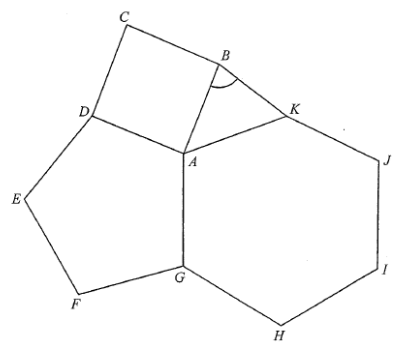

DSE 2023 · 卷二 · Q20
正方形、五邊形與六邊形
幾何 · 正多邊形內角 · 選擇題
題目
圖中所示為正方形 $ABCD$、正五邊形 $ADEFG$ 及正六邊形 $AGHIJK$。求 $\angle ABK$。
A.
$69^\circ$
B.
$72^\circ$
C.
$74^\circ$
D.
$75^\circ$

原題附圖
題解
第 1 步
三個圖形在 $A$ 的內角
正 $n$ 邊形內角
\(\frac{(n-2)\times180^\circ}{n}\)
正多邊形每個內角相等，總和為 $(n-2)\times180^\circ$。
正方形 $90^\circ$，正五邊形 $\dfrac{3\times180^\circ}{5}=108^\circ$，正六邊形 $\dfrac{4\times180^\circ}{6}=120^\circ$。
第 2 步
求 $\angle BAK$
三個角環繞 $A$ 點：\[ \angle BAK=360^\circ-(90^\circ+108^\circ+120^\circ)=42^\circ \]
第 3 步
證明 $AB=AK$
正方形 $AB=AD$，正五邊形 $AD=AG$，正六邊形 $AG=AK$，故 $AB=AK$，$\Delta ABK$ 為等腰三角形。
第 4 步
等腰三角形底角
\[ \angle ABK=\frac{180^\circ-42^\circ}{2}=69^\circ \]
答案
A
（$69^\circ$）
練習
同類新題
題目.
正方形 $ABCD$ 與正五邊形 $ADEFG$ 共用邊 $AD$ 且不重疊。求 $\angle BAG$。
顯示題解
第 1 步.
正方形在 $A$ 的內角 $90^\circ$，正五邊形 $108^\circ$
第 2 步.
兩圖形不重疊，$\angle BAG=360^\circ-90^\circ-108^\circ$
答案：$162^\circ$
‹ 上一題
目錄
下一題 ›